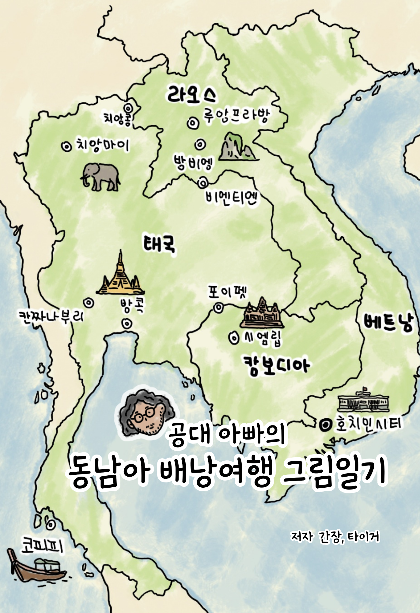

My Bookshelf
기록하고 그린 이야기들을 책으로 전합니다.

공대 아빠의 아기랑 해외여행 그림일기
낮에는 공대 교수로, 밤에는 아빠로 살아가는 저자 '간장'의 다정하고 서정적인 해외여행 그림일기입니다.
알라딘에서 보기
더보기
2019년, 생후 4개월 된 아기 로라와 무작정 떠났던 미국 오하이오 생활을 시작으로 올란도, 괌, 푸꾸옥, 타이베이, 다낭까지 이어지는 우리 가족의 여정을 담았습니다.

공대 아빠의 동남아 배낭여행 그림일기
"단돈 100만 원, 종이 지도 한 장 들고 떠났던 스물네 살 청춘들의 무모하고 투박한 기록"
최신 여행 정보도, 세련된 고화질 사진도 없습니다. 화석이 되어버린 15년 전 환율과 이미 사라졌을지도 모르는 로컬 게스트하우스의 흔적만 가득합니다.
부크크에서 보기
최신 여행 정보도, 세련된 고화질 사진도 없습니다. 화석이 되어버린 15년 전 환율과 이미 사라졌을지도 모르는 로컬 게스트하우스의 흔적만 가득합니다.
더보기
하지만 이 책에는 스마트폰도 없던 시절, 구글 지도 대신 종이 지도를 펼치고 여행 책자의 모서리를 접어가며 발로 뛰던 2009년 겨울의 뜨거운 청춘이 고스란히 담겨 있습니다.
군 전역 후 주머니에 딱 100만 원을 넣고 세상을 향해 출사표를 던졌던 두 친구 '간장'과 '타이거'. 베트남의 낯선 오토바이 물결을 시작으로 태국의 카오산 로드 옥탑방, 라오스의 시간이 멈춘 땅, 그리고 캄보디아의 경이로운 앙코르 유적까지. 먼지를 뒤집어쓰며 온몸으로 부딪쳤던 4개국 한 달간의 좌충우돌 여정이 15년이 지난 지금, 따뜻하고 투박한 그림일기로 다시 태어났습니다.
이 책은 단순히 '어디가 맛있다'를 알려주는 가이드북이 아닙니다. 일상에 치여 미뤄두었던 나만의 소중한 기억을 소환하고, "가끔은 너무 오래 고민하지 말고 일단 시작해보는 게 어떨까?"라는 다정한 응원을 건네는 청춘의 타임캡슐입니다.
군 전역 후 주머니에 딱 100만 원을 넣고 세상을 향해 출사표를 던졌던 두 친구 '간장'과 '타이거'. 베트남의 낯선 오토바이 물결을 시작으로 태국의 카오산 로드 옥탑방, 라오스의 시간이 멈춘 땅, 그리고 캄보디아의 경이로운 앙코르 유적까지. 먼지를 뒤집어쓰며 온몸으로 부딪쳤던 4개국 한 달간의 좌충우돌 여정이 15년이 지난 지금, 따뜻하고 투박한 그림일기로 다시 태어났습니다.
이 책은 단순히 '어디가 맛있다'를 알려주는 가이드북이 아닙니다. 일상에 치여 미뤄두었던 나만의 소중한 기억을 소환하고, "가끔은 너무 오래 고민하지 말고 일단 시작해보는 게 어떨까?"라는 다정한 응원을 건네는 청춘의 타임캡슐입니다.